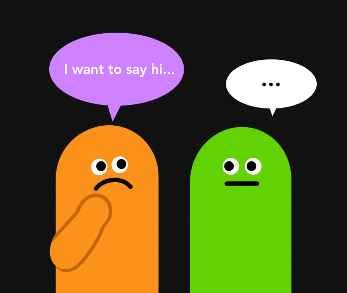
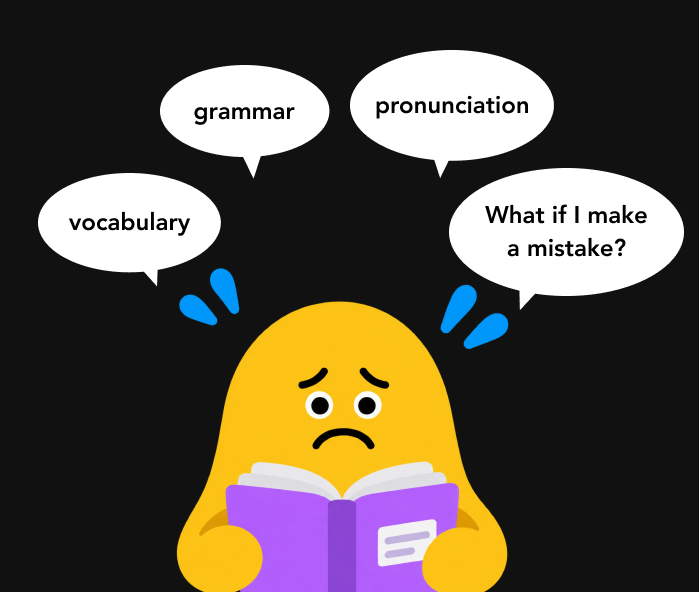
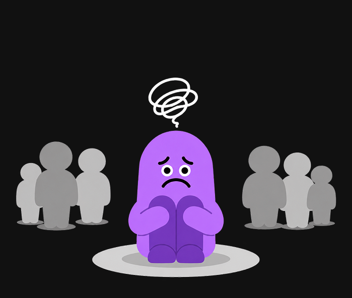
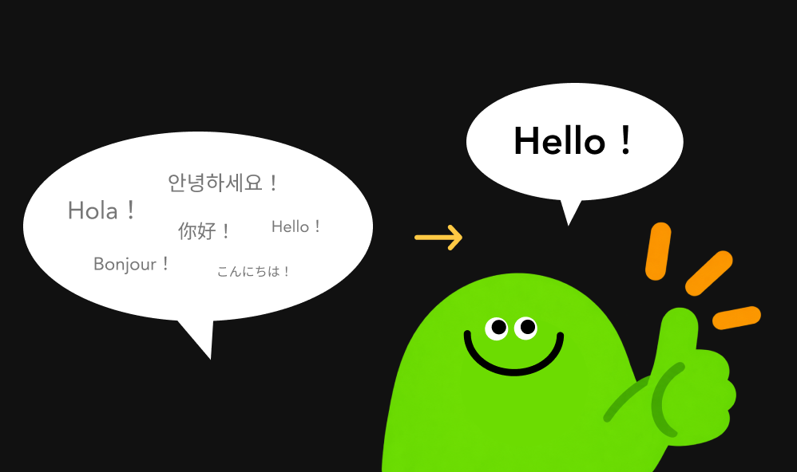
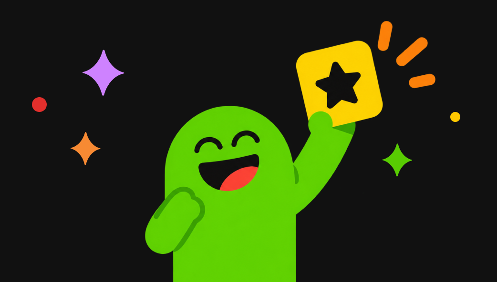
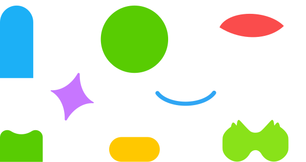
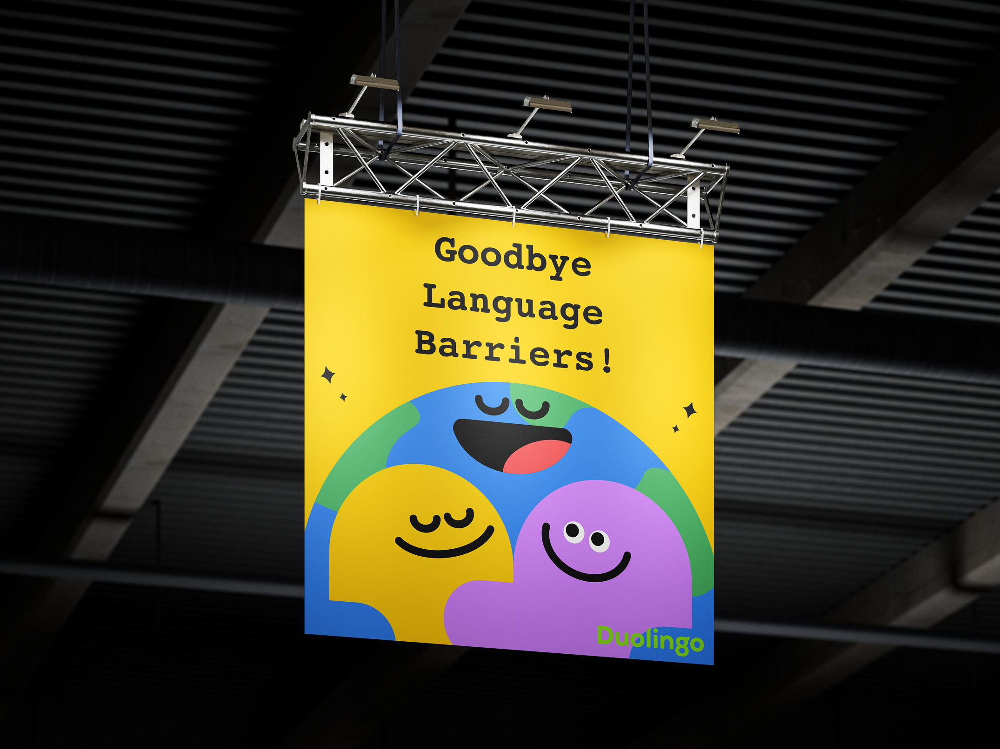
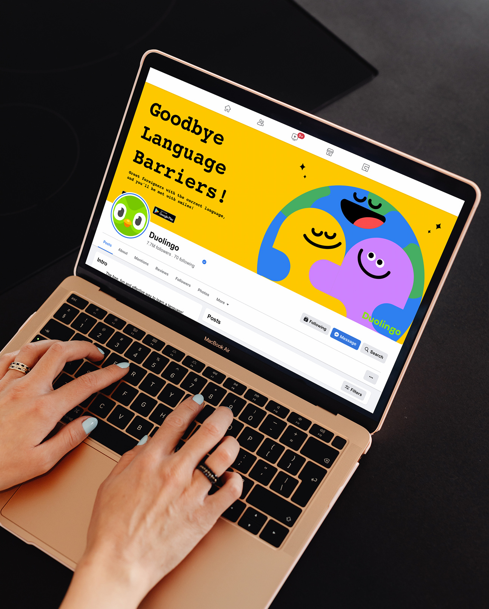

A game built to get beginners past the first awkward words, together.
Research
“The biggest barrier isn’t always knowing the words. Sometimes it’s having the confidence to use them.”
I looked at what makes beginners hesitate to speak and what gets in the way of their confidence.
Key Findings

Communication
Learners want everyday conversation, not vocabulary drills.

Intimidation
The fear of getting it wrong is what stops the first sentence.

Isolation
Studying alone makes the distance feel bigger.

Simplicity
Pointing at something beats spelling it out.

Engagement
If it plays like a game, people come back to it.
Persona
Meet Akemi.
Akemi is a Japanese exchange student at UCLA studying game design. She wants to make friends and improve her English, but limited confidence and fear of making mistakes often keep her from joining conversations.
Make friends and build confidence speaking English.
A fun, encouraging way to practice without fear of mistakes.
Feels nervous speaking English and struggles to join conversations.
Ideation
What if practice felt more like interaction than studying?
Visual System
Color
Type
Courier
Aa Bb Cc 0123
Elements

Experience
Enter
Goodbye Language Barriers
Explore
recognize simple phrases through speech bubbles
Finish
Hello Friends Everywhere!
Choose
select the appropriate language for the country
Interact
engage with language through playful visual interaction
Final Design


